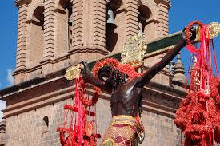
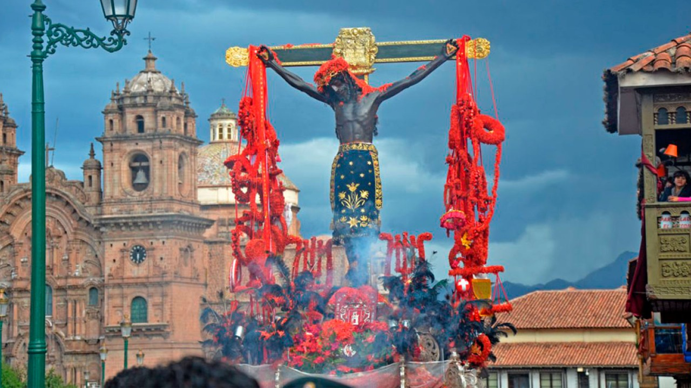

Fiesta del Señor de los Temblores: El Patrón Jurado del Cusco
La Fiesta del Señor de los Temblores es una de las celebraciones religiosas más importantes de Cusco. Se lleva a cabo el Lunes Santo y es considerada la festividad más representativa de la fe cusqueña. Su imagen es venerada como el protector de la ciudad desde el terremoto de 1650.
Historia
La devoción al Señor de los Temblores comenzó en el siglo XVII, cuando un fuerte terremoto sacudió Cusco en 1650. Se dice que la imagen de Cristo logró calmar el sismo, lo que llevó a su proclamación como el Patrón Jurado del Cusco. Desde entonces, cada Lunes Santo, su imagen es llevada en procesión por las calles de la ciudad.


Horarios y Ubicación
- Ubicación: Catedral del Cusco y Plaza de Armas de Cusco.
- Fecha de celebración: Lunes Santo de cada año.
- Costo de entrada: La procesión es gratuita, pero el acceso a la Catedral puede requerir una entrada.
Consejos para Visitantes
- Llega con anticipación: La Plaza de Armas se llena rápidamente de fieles y turistas.
- Viste ropa adecuada: Cusco puede tener cambios de temperatura durante el día.
- Respeta el carácter religioso: La festividad es un acto de fe profundamente arraigado en la cultura cusqueña.
- Disfruta de la música sacra: Durante la procesión, se interpretan cantos que crean una atmósfera única.
- Captura la experiencia: La imagen del Señor de los Temblores cubierta de pétalos rojos es un espectáculo impresionante.